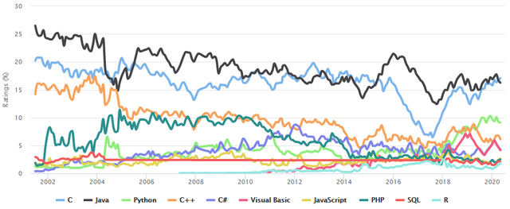

En los años 40, fueron los primeros compuatadores eléctricos. La velocidad y memoria limitadas frozaban a los programadores a escribir programas tuneados a mano en ensalbadores. Eventualmente se vio que la programación en lenguaje ensablador requieria un gran esfuerzo intelectual.
Una propuesta temprana para un lenguaje de alto nivel fue Plankalkül, desarollado por Konrad Zuse para su computadora >1 entre 1942 y 1945, pero no implementado en aquel entonces.
Los primeros lenguajes diseñados para comunicar intrucciones a un computadora fueron escritos al principio de la decada del 50. Short Code, de Jhon Mauchly, propuesto en 1949.
El índice TIOBE o índice de la comunidad de programación TIOBE (en inglés: TIOBE programming community index) mide la popularidad de los lenguajes de programación. El índice fue creado por la compañía TIOBE, con sede en Eindhoven, Países Bajos.
La clasificación en enero de 2023 es:
| Posición | Lenguajes | Rating |
|---|---|---|
| 1 | Python | 16,36% |
| 2 | C | 16,26% |
| 3 | C++ | 12,91% |
| 2 | Java | 12,21% |
| 5 | C# | 5,73% |